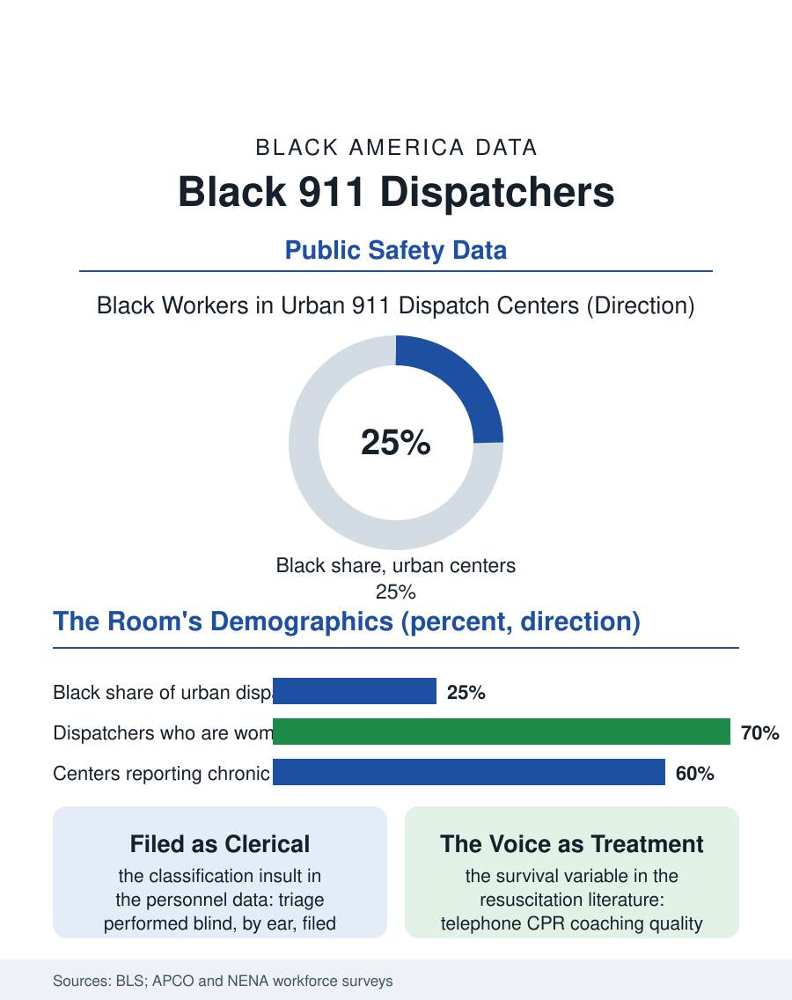

Black Employment
The First Voice: Black 911 Dispatchers
Dispatchers, heavily Black in the urban centers, perform blind triage classified as clerical work, and their coaching voices are a measured survival variable. The dispatch file.

The 911 dispatcher is the first first responder, the voice that answers the worst moment of a stranger's life and converts panic into a dispatched plan, and the workforce is one of the most female and, in the urban centers, most Black of any public safety occupation. Federal counts place public safety telecommunicators in the hundreds of thousands, with Black workers holding a share in the urban systems that reflects the cities themselves. This article reads the dispatch file, the invisible center of the emergency system.
The Room Where It Starts
The public safety answering point is a workplace unlike any other in this atlas: a darkened room of screens and voices, staffed around the clock, where the work is classified in most personnel systems as clerical while being, in operational fact, clinical and tactical triage performed blind, by ear. The dispatcher's instruments are protocol systems, the scripted interrogations that standardize the call, and a voice trained to extract addresses from screaming and instructions into the ears of a parent performing CPR on a child, the telephone CPR whose coaching quality the resuscitation literature now measures as a survival variable. Black dispatchers anchor the urban centers' floors, recruited from the cities they answer for, bringing the geographic and cultural literacy, the neighborhood names, the housing complexes' layouts, the difference between a celebration's gunfire report and a shooting's, that no protocol card encodes. The workforce data describe the job's strange economics: wages in the clerical band despite the responsibility, chronic understaffing that converts into mandatory overtime, and attrition that the centers' own studies attribute less to the calls' horror than to the schedule's grind and the classification's insult, a finding that has powered a national reclassification campaign to move dispatchers into the protective service category their work matches.
The Call's Hidden Curriculum
Dispatch is where the emergency system's biases can enter earliest, and the file records the research honestly: call prioritization and unit assignment involve judgment under time pressure, and the studies of response time by neighborhood find patterns that implicate the whole chain, center staffing, unit availability, and geography, more than any individual voice. The protocol systems are the engineered counterweight, determinative scripts that assign priority by reported fact rather than by neighborhood or tone, and their adoption and auditing are the file's reform chapter. The language line is the centers' growing pressure: the urban systems answer in dozens of languages through interpreter services, each translation adding seconds the cardiac data price, and the bilingual dispatcher's premium, where it exists, is among the file's most obviously underpriced skills. The mental health call has remade the job in the recent data: a rising share of the 911 stream is behavioral crisis, and the co-responder and alternative response models, clinicians embedded in the center or dispatched alongside, have made the dispatcher the triage point of the mental health system as well, a clinical expansion the classification system has not begun to catch.
The Voice That Stays
The occupation's culture is gallows-humored, tightly bonded, and largely invisible to the public it serves, which knows the police officer, the firefighter, and the medic as the system's faces while the voice that sent them remains anonymous by design. The Black dispatchers' associations and the profession's diversity leadership have worked the same two fronts as every uniformed file here: recognition, the reclassification and pay campaigns, and pipeline, recruiting from the communities whose calls the center answers, since the local knowledge is a genuine qualification no academy can install in a transplant. The trauma file is the occupation's unpriced cost: the dispatcher hears the death she cannot reach, hundreds of times a career, without the responder's closure of the scene, and the peer support and critical incident programs lag the fire and police services' by years in most centers' budgets. The dispatch file closes in the room at 4 a.m., the board lit with the city's emergencies in progress, a Black woman's calm voice walking a teenager through compressions on his grandfather while the rig rolls from the station the EMS file described. Every service in this atlas begins as her judgment call. The file asks the personnel systems of America to classify her accordingly, and notes that the callers, who owe her their lives in the most literal sense the language permits, already have.
More in Black Employment
The Black Unemployment Rate: The Two-to-One Pattern
Black unemployment runs at roughly twice the White rate — 5.5 percent against 3.3 percent in annual averages — a ratio stable across five decades of federal data. How it is measured and why it persists.
Black Median Weekly Earnings: The 80-Cent Ratio
Black full-time workers earn a median of about $900 a week — roughly 80 cents for every dollar White workers earn. The BLS earnings data by group, gender, and occupation.
Black Labor Force Participation: Working at National Rates
Black labor force participation runs at roughly the national rate — and Black women participate at higher rates than White women. The BLS participation data.
Source: U.S. Bureau of Labor Statistics occupational data; Association of Public-Safety Communications Officials (APCO) workforce studies.